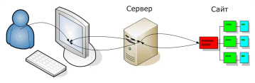
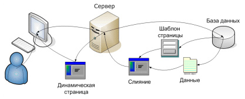

- Frontend разрабочики - отвечают за визуальную часть сайта
- Backend специалисты - разрабатывают программную составляющую веб-ресурса
На сегодняшний день используют следующие технологии:
- HTML, CSS – технологии для создания разметки(HTML) и внешнего вида страницы
- PHP, JavaScript – языки программирования, заставляющие «ожить» страницу;
- база данных MySQL – отвечает за хранение текстовой информации
- Notepad++, Photoshop, Filezilla–специальные инструменты для верстки, создания графики, редактирования файлов на хостинге
- CMS – дословно система управления контентом. Нужна для удобного управления содержимым сайта, блога.
Разметка и дизайн:
- С помощью HTML тэгов браузер формирует структуру документа
- CSS оформляет визуально цвет, стиль, шрифт текста и других элементов
Особенности статического сайта
- Web-страницы сайта создаются заранее
- Обновление информации происходит вручную
- Cтатический сайт дешевле в разработке и технической поддержке
Главные недостатки:
- Оперативность публикации актуальной информации
- Трудоёмкость модификаций

Структура статического сайта
Особенности динамического сайта
- Состоят из шаблонов дизайна, контента и скриптов
- Позволяет обеспечить гибкость в подборе и представлении информации для конкретных пользователей
- Механизм формирования и вывода страницы не изменяется
- Благодаря JavaScript страницы можно сделать интерактивными

Структура динамического сайта
Более подробно можно узнать здесь:
Полезные инструменты при разработке
- Notepad++ - удобный HTML-редактор
- Photoshop – приложение для работы с графикой
- Figma – весьма удобный инструмент для проектирования макетов сайтов
- Dreamweaver – визуальный HTML-редактор